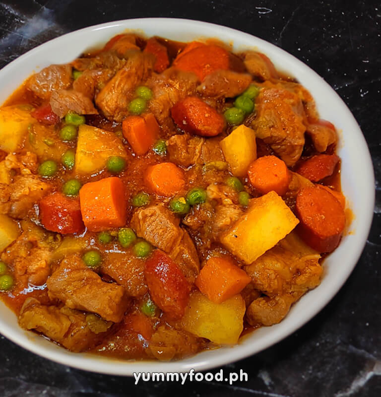

Pork Menudo

Description:
Pork Menudo is a popular Filipino dish served during gatherings and fiestas.
It is a dish where pork is served in a savory tomato stew.
Ingredients:
- 1/4 cup of cooking oil
- 2 pc potatoes, cut in cubes
- 1 pc carrot, cut in cubes
- 1 cup cubed red bell pepper
- 6 cloves garlic, minced
- 1 pc onion, minced
- 250 grams pork shoulder, cut into small cubes
- 250 grams pork belly, cut into small cubes
- 250 grams pork liver, cut in small cubes
- 1 (250g) pack tomato sauce
- 1 1/2 cups water
- 1 tsp sugar
- 2 tbsp raisins
- Salt and ground black pepper to taste
Steps in Cooking Pork Menudo
-
Heat up the pan over medium heat. Add 1 table spoon of cooking oil.
-
Sauté the carrots and potaetoes until lightly brown then set aside. Doing this will produce fond in a pan do not de-glaze it yet.
-
Add the remaining oil and sauté onion and garlic until fragrant.
-
Heat up and add the pork shoulder and belly, fry until lighly browned.
-
Add he pork liver and cook for about 2 minutes.
-
Add the tomato sauce, water, sugar, salt and pepper. Mix well to deglaze the fond.
-
Add the carrots and potatoes in the pan. Lower he heat until the meat and vegetables are cooked through and the sauce has thickened.
-
Add raisins and bell pepper. Let the pork menudo cook for 2 more minutes then take off the heat and serve.
Fun Fact!
Pork Menudo is one of the "confusing dishes" in Filipino cuisine. The "confusing dishes" are: Menudo, Kaldereta, Afritada, and Mechado. The confusion stems from similarities in ingredients namely the vegetables and the tomato base.
Back to Main Menu